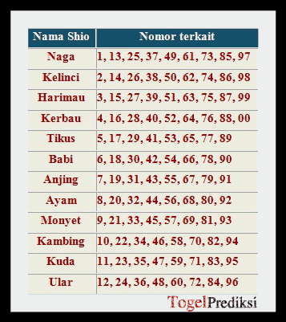

Welcome to 2
10 Jenis Permainan Bola Kecil yang Dipertandingkan Secara Resmi
2021.03.24 18:31Home Company Community Seller Story Life at Tokopedia Life at Tokopedia Design Data Product Tech Stories Press Release Behind The Scene Innovation Logistic & Fulfillment Milestone Operation Product Social Impact Upcoming Events Tanya Toped Insight Gaya dan Fashion Pria Fashion Wanita Kecantikan Relationship Kesehatan Keuangan Gadget dan Teknologi Entertainment Hobi dan Gaya Hidup Travel dan Kuliner Home and Living Kids and Parenting Topik Seru Lainnya Top List Sign in Welcome! Log into your account your username your password Forgot your password? Password recovery Recover your password your email Jual Beli Online Official Store Produk Digital Tiket Kereta Tiket Pesawat Donasi Layanan Finansial Bantuan Sign in Welcome! Log into your account your username your password Forgot your password? Get help Password recovery Recover your password your email A password will be e-mailed to you. Tokopedia Blog Home Company Community Seller Story Life at Tokopedia Life at Tokopedia Design Data Product Tech Stories Press Release Behind The Scene Innovation Logistic & Fulfillment Milestone Operation Product Social Impact Upcoming Events Tanya Toped Insight Gaya dan Fashion Pria Fashion Wanita Kecantikan Relationship Kesehatan Keuangan Gadget dan Teknologi Entertainment Hobi dan Gaya Hidup Travel dan Kuliner Home and Living Kids and Parenting Topik Seru Lainnya Top List Insight Topik Seru Lainnya
10 Jenis Permainan Bola Kecil yang Dipertandingkan Secara Resmi
By Tokopedia - 8 February 2021 0 377 Share Facebook Twitter Pinterest WhatsApp Sumber gambar: unsplashTidak seperti sepak bola dan basket, permainan bola kecil membutuhkan tingkat fokus yang lebih tinggi. Simak jenis permainan bola kecil selengkapnya!
Selain dapat membawa perasaan senang ketika dilakukan bersama-sama, berolahraga juga dapat membuat badan kita menjadi sehat. Terutama jika olahraga dilakukan bersama orang terdekat kita, seperti teman ataupun pasangan.
Mungkin bagi kalangan laki-laki, sepak bola atau basket menjadi salah satu pilihan olahraga yang digemari. Namun, di luar olahraga yang menggunakan bola besar, ada juga olahraga atau permainan bola kecil yang juga tidak kalah menyenangkan.
Selain itu, ada juga permainan bola kecil yang sudah memasuki kejuaraan dan pertandingan secara resmi, baik secara nasional ataupun internasional.
Tidak hanya memerlukan tingkatan fokus yang lebih tinggi, beberapa permainan bola kecil juga menuntut kelincahan pada pemainnya.
Penasaran dengan permainan bola kecil apa saja yang sudah dipertandingkan secara resmi? Simak ulasan lengkapnya berikut ini!
Temukan koleksi Tamiya terlengkap dan original hanya di TokopediaContoh Permainan Bola Kecil
1. Baseball
Sumber gambar: UnsplashBaseball merupakan cabang permainan bola kecil yang dimainkan oleh dua tim, dengan tugas sebagai pelempar ( pitcher) dari tim yang melempar bola dan pemukul ( batter) yang bertugas memukul bola menggunakan tongkat pemukul atau bat .
Tim yang melempar berusaha menangkap bola oleh tim yang memukul sedangkan tim yang memukul harus berlari berlawanan arah jarum jam untuk sampai kepada plate yang disebut juga sebagai base . Baseball sendiri memiliki kejuaraan dunia tersendiri yang bernama World Baseball Classic .
Baca Juga: Macam-macam Akibat yang Ditimbulkan Rotasi Bumi dan Penjelasannya
2. Softball
Sumber gambar: PixabayHampir sama dengan baseball, permainan bola kecil satu ini memiliki dapat dimainkan oleh pria dan wanita.
Bola softball berukuran lebih besar dari bola baseball, dengan teknik lemparan yang juga berbeda dari baseball.
Memiliki bentuk lapangan yang sama, ukuran dari lapangan softball ini lebih kecil dibanding lapangan baseball. Pada plate tempat pitcher berada, dalam softball, pitcher diharuskan meletakkan kedua kakinya di plate tersebut ketika melempar.
Biasanya kejuaraan softball ini dikhususkan untuk pemain-pemain wanita, seperti pada kejuaraan Woman’s Softball World Championship yang diselenggarakan oleh World Baseball Softball Confederation .
3. Badminton
Sumber gambar: UnsplashLebih kita kenal dengan sebutan bulu tangkis, olahraga permainan bola kecil ini dimainkan oleh dua orang untuk pertandingan tunggal, dan dua pasangan untuk pertandingan ganda, yang saling berlawanan.
Menggunakan raket sebagai alat yang berbentuk bulat di bagian pemukulnya dengan jaring-jaring berongga, yang memiliki tujuan untuk memukul bola bernama kok atau shuttlecock melewati jarang agar jatuh di bidang pemain lawan.
Indonesia memiliki salah satu kejuaraan bulu tangkis terbesar dengan nama Indonesia Open , adapun World Championship BWF yang merupakan kejuaraan besar bulu tangkis dunia.
4. Tenis
Sumber gambar: PixabayTenis memiliki karakteristik yang hampir mirip dengan bulu tangkis. Menggunakan raket yang lebih kokoh, dan bolanya juga yang lebih berat, kedua jenis olahraga ini memiliki unsur kesamaan di dalamnya.
Begitu pula dengan jumlah pemainnya, terdapat pertandingan tunggal dan juga ganda yang identik dengan bulu tangkis.
Dalam pertandingannya, kedua tim harus berusaha untuk memasukan bola ke area lapangan pemain lawan untuk mendapatkan angka.
Olahraga permainan bola kecil ini juga memiliki kejuaraan ternama seperti Wimbledon Champions yang berasal dari Inggris.
Temukan berbagai perlengkapan gaming terbaikmu dengan harga terbaik di sini!5. Tenis Meja
Sumber gambar: PixabayTenis meja atau ping pong termasuk ke dalam jenis olahraga raket dan permainan bola kecil yang juga dimainkan oleh dua orang atau dua pasangan yang berlawanan.
Permainan bola kecil ini menggunakan raket yang terbuat dari kayu dengan lapisan karet yang biasa disebut bat, bola pingpong, dan lapangan permainan yang berbentuk meja.
Dengan ukuran bola yang kecil, olahraga ini memerlukan kecepatan reaksi dan koordinasi mata dan tangan yang baik untuk permainan tempo cepat. Induk olahraga tenis meja di Indonesia adalah Persatuan Tenis Meja Seluruh Indonesia dan di dunia adalah International Table Tennis Federation .
Tenis meja atau ping pong juga memiliki kejuaraan dunianya sendiri dengan nama World Table Tennis Championships yang diselenggarakan oleh ITTF.
Baca Juga: Tumbuhan yang Berkembang Biak dengan Umbi Batang & Gambarnya
6. Sepak Takraw
Sumber gambar: PixabayPermainan bola kecil satu ini merupakan jenis permainan gabungan antara sepak bola dan bola voli yang dimainkan di lapangan ganda bulu tangkis.
Memiliki sistem serupa dengan voli, dimana pemain harus membawa bola kearah lapangan lawan namun dengan peraturan sepak bola yang tidak memperbolehkan pemain untuk menyentuh bola dengan tangan.
Satu tim dalam pertandingan sepak takraw ini berisikan 3 orang dengan posisi pemain bertahan yang tidak diputar seperti voli. Pemain atau tim hanya boleh menyentuh bola takraw yang terbuat dari anyaman rotan ini sebanyak 3 kali berturut-turut.
Salah satu kejuaraan sepak takraw bergengsi adalah King’s Cup Sepaktakraw World Championship yang diadakan di Bangkok, Thailand.
7. Kriket
Sumber gambar: UnsplashPermainan bola kecil yang identik dengan baseball ini juga menjadi salah satu cabang olahraga permainan bola kecil yang memiliki kejuaraannya sendiri. Teknik bermainnya pun identik dengan baseball yang memiliki tim pelempar dengan tim pemukul.
Tim pemukul harus mencoba memukul bola dan berlari ke arah base untuk mendapatkan poin yang bisa membuat timnya menang.
Bola yang digunakan pun memiliki bentuk yang sedikit lonjong dengan bat atau pemukul khusus yang lebih lebar dari bat baseball.
Olahraga kriket memiliki kejuaraan dunia sendiri dengan nama Cricket World Cup yang pada tahun 2019 lalu diadakan di Inggris dan Wales.
8. Hoki
Sumber gambar: PixabayOlahraga hoki mungkin identik dengan hoki es atau ice hockey yang sangat populer di Kanada.
Namun, ada juga olahraga hoki yang dapat dimainkan di atas lapangan hijau menggunakan bola dan stik.
Stik yang berbentuk menyerupai huruf “J” tersebut, digunakan oleh pemain untuk menggiring, merebut, dan memukul bola ke arah gawang berukuran 2,14 m x 3,66 m.
Sama seperti sepak bola, pertandingan hoki berlangsung selama dua babak, dengan masing-masingnya berlangsung selama 15 menit waktu normal.
Adapun kejuaraan dunia dari hoki lapangan ini diadakan oleh Federation Internationale de Hockey dengan nama Hockey World Cup yang akan berlanjut di tahun 2023 nanti.
9. Golf
Sumber gambar: PixabaySeringkali dikenal sebagai permainan bola kecil kaum elit, olahraga golf merupakan jenis olahraga yang dimainkan di luar ruangan secara perorangan atau tim yang berlomba memasukkan bola ke dalam lubang-lubang yang ada di lapangan dengan jumlah tersedikit mungkin.
Bola golf dipukul dengan satu set tongkat pemukul yang juga dikenal dengan club atau stik golf di padang golf yang masing-masing memiliki desain dan tantangan yang unik dengan 9 atau 18 lubang.
Salah satu pertandingan resmi yang bergengsi dalam permainan bola kecil ini adalah PGA Tour Champions yang diselenggarakan oleh PGA Tour .
10. Billiard
Sumber gambar: UnsplashBilliard atau biliar adalah sebuah cabang olahraga yang masuk dalam kategori cabang olahraga konsentrasi, yang membutuhkan ketahanan dan pemahaman mental bagi para pemainnya.
Cabang olahraga ini dimainkan di atas meja dengan menggunakan stick billiard yang bertugas membantu pemain memasukan bola berangka ke dalam 6 lubang di atas meja.
Permainan bola kecil ini terbagi ke dalam beberapa jenis, seperti Carom, English Billiard, dan Pool.
Permainan bola sodok ini memiliki kejuaraan dalam kategori English Billiard, dengan nama World Billiards Championship yang diselenggarakan oleh World Billiards.
Permainan bola kecil ini, tentunya menuntut para pemainnya untuk lebih teliti dan fokus ketika bertanding melawan pemain lainnya.
Dengan ukuran yang kecil dan tergolong ringan, pemain harus teliti dalam mengkoordinasikan penglihatan juga gerakan pada bola yang dilontarkan lawan.
Baca Juga: Mengenal Ukuran Lapangan Bulu Tangkis Versi PBSI
Itu dia, jenis permainan bola kecil yang dipertandingkan secara resmi, baik dalam kejuaraan nasional ataupun internasional, Toppers! Apakah kamu termasuk ke dalam atlet permainan bola kecil di atas?
Nah, Toppers, jika kamu masih ingin mendapatkan waktu belajar tambahan, yuk, coba askes portal eLearning maupun lembaga kursus yang bisa diakses dari rumah untuk menambah pengetahuanmu.
Kamu bisa menambah ilmu di bidang apapun dengan harga yang terjangkau. Agar semakin hemat, jangan lupa cek voucher belajar eLearning/kursus dan bimbel di Tokopedia. Kamu juga bisa membayar uang sekolah maupun uang kuliah melalui Tokopedia.
Jadi, segera kunjungi Tokopedia sekarang juga dan penuhi seluruh kebutuhan belajarmu!
Hilangkan rasa bosan dan bikin waktu luang lebih seru dengan berbagai permainan menarik serta kekinian di sini!Penulis: Lazuardi
TAGS Index Tokopedia Belajar Share Facebook Twitter Pinterest WhatsApp Previous article 11 Macam Kreasi Biskuit Regal untuk Berbagai Menu Makanan & Minuman Next article 15 Manfaat Sereh: Harum, Serbaguna dan Menyehatkan Tokopedia https://www.tokopedia.comRELATED ARTICLES MORE FROM AUTHOR
Topik Seru LainnyaApa Itu Brainstorming? Perlukah Dilakukan?
Topik Seru LainnyaRumah Adat Bali Beserta Gambar, Keunikan, Fungsi & Ciri Khasnya
Topik Seru LainnyaContoh Surat Keterangan Kerja dari Perusahaan
Artikel Terbaru
10 Manfaat Vitamin B Complex: Kurangi Stres hingga Anxiety 10 Couple Goals yang Bisa Jadi Inspirasi, Dijamin Langgeng! Toxic Parents: Cara Menghadapi Orang Tua Toxic dengan Bijak Apa Itu Brainstorming? Perlukah Dilakukan? Nama Bayi Laki-Laki Islami dan Modern, Keren & Tidak Pasaran 8 Ide Bridesmaid Dress: Bisa Jadi Sorotan! 10 Sabun Antiseptik Terbaik, Ampuh Bunuh Kuman di Tubuh 10 Suplemen Penambah Darah Terbaik: Bantu Atasi Anemia Apa Itu Pilates? Simak Penjelasannya! 10 Manfaat Kunyit Putih, Obati Maag hingga Tangkal KankerEDITOR PICKS
10 Manfaat Vitamin B Complex: Kurangi Stres hingga Anxiety
24 March 202110 Couple Goals yang Bisa Jadi Inspirasi, Dijamin Langgeng!
24 March 2021Toxic Parents: Cara Menghadapi Orang Tua Toxic dengan Bijak
24 March 2021POPULAR POSTS
Jadwal Pengiriman Pesanan Selama Libur Natal dan Tahun Baru 2020
25 December 2019Urutan Lengkap 24 Film Marvel Cinematic Universe
2 November 202020 Kata-Kata Minta Maaf Buat Pacar, Dijamin Bikin Meleleh
8 October 2020POPULAR CATEGORY
Travel dan Kuliner 801 Kesehatan 591 Entertainment 472 Gadget dan Teknologi 447 Kecantikan 344 Hobi dan Gaya Hidup 337 Home and Living 327 Topik Seru Lainnya 289 Top List 286 ABOUT US FOLLOW US Tentang Kami Pusat Penjual Mobile Apps Mitra Karir Tokopedia Care © 2009-2021, PT Tokopedia MORE STORIESSumber Energi Alternatif, Contoh & Pemanfaatannya Sehari-hari
10 March 2021Keutamaan Melaksanakan Sholat Tepat Waktu bagi Umat Muslim
15 April 2020